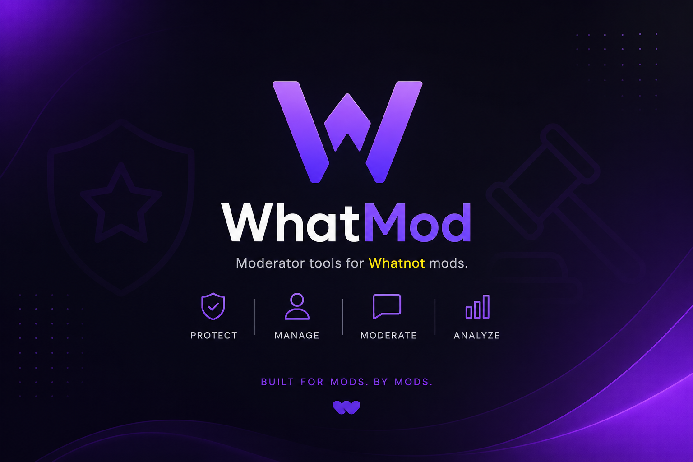

Quick Chat Banks
Send or copy polished mod messages for claims, reminders, giveaways, sizing, shipping, and stream announcements.
Built for mods. By mods.
WhatMod gives stream moderators fast message banks, notes, hotkeys, giveaways, announcements, reconnect controls, and stream-ready workflows in one polished toolkit.

Everything a serious mod needs
Send or copy polished mod messages for claims, reminders, giveaways, sizing, shipping, and stream announcements.
Keep mod messages, giveaways, announcements, sneaker sizing, and unique stream workflows separated and easy to reach.
Trigger your most-used actions without breaking focus during fast-moving auctions and chat spikes.
Track general notes, giveaway notes, and unique occurrences so your team remembers what happened.
Launch and reconnect browser controls for smoother moderation sessions when streams get busy.
Designed around activation, versioning, and updates so your tool can grow like a real product.
Preview
WhatMod is made to reduce repetitive typing, keep key information close, and help moderators respond consistently while the show keeps moving.
Subscription
Monthly access
Secure checkout is handled by Stripe.
FAQ
No. WhatMod is an independent tool made for Whatnot moderators.
This site is set up to use a Stripe Payment Link. Replace the placeholder in script.js with your live or test Payment Link URL.
Yes. This is a static HTML, CSS, and JavaScript site. No server is required when using a Stripe Payment Link.